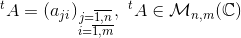
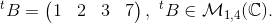

Transpusa unei matrice
Transpusa unei matrice
Definiția M17: Transpusa unei matrice
Fie o matrice.
Matricea notată (sau sau ), definită prin  se numește transpusa matricei 
Observație:
Transpusa unei matrice se obține prin schimbarea liniilor în coloane și a coloanelor în linii (adică citim elementele de pe linie și le scriem pe coloană sau invers).
Exemple:
- Fie matricea Transpusa acestei matrice este matricea
- Avem matricea atunci transpusa ei este matricea 
- Matricea are ca și transpusă pe
Proprietățile transpusei unei matrice
Propoziția M18: Proprietățiile transpusei unei matrice
Exemplul 1: (Arătăm că are loc proprietatea a.)
Fie matricea
Transpusa acestei matrice este matricea
Exemplul 2: (Arătăm că are loc proprietatea b.)
Fie matricea și scalarul
Atunci:
Exemplul 3: (Arătăm că are loc proprietatea c.)
Fie matricele
Atunci:
Exemplul 4: (Arătăm că are loc proprietatea d.)
Fie matricele și
Atunci:
Atunci: